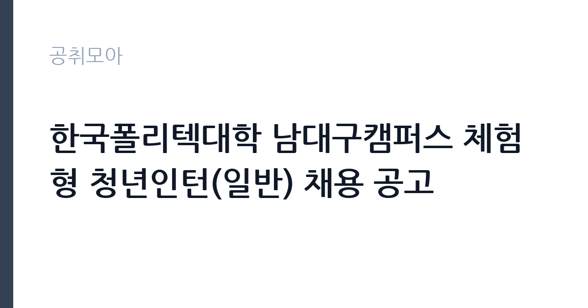

[공공기관] 한국폴리텍대학 남대구캠퍼스 체험형 청년인턴(일반) 채용 공고
학교법인한국폴리텍 · 대구 · 마감 2026-10-14 (D-9) · 출처 잡알리오

한눈에 보는 모집 조건
| 기관 | 학교법인한국폴리텍 |
|---|---|
| 공고명 | 한국폴리텍대학 남대구캠퍼스 체험형 청년인턴(일반) 채용 공고 |
| 고용형태 | 청년인턴(체험형) |
| 근무지 | 대구 |
| 게시일 | 2026-10-06 |
| 마감일 | 2026-10-14 (D-9) |
지원자격, 이렇게 읽으세요
- 공공기관 채용공시
- 세부 조건은 원문 공고문 확인
응시자격은 원서접수 마감일 기준 만 15세 이상 34세 이하인 청년이며, 제대군인 등은 복무 기간에 따라 상한 연령이 연장됩니다. 학력과 성별 제한이 없고 한국폴리텍 인사규정의 결격사유에 해당하지 않아야 합니다. 다만 취업자와 취업 결정자, 폴리텍대학 청년인턴 유경험자는 원칙적으로 제외되므로 해당 여부를 먼저 확인하셔야 합니다.
이 공고의 포인트
이 공고의 포인트는 진입 장벽이 낮다는 점입니다. 학력과 전공을 묻지 않고 청년 연령 요건만 맞으면 지원할 수 있습니다. 공공기관 일경험은 이후 공기업과 공공기관 취업에서 자기소개서 소재와 면접 경험으로 활용할 수 있습니다. 근무지는 대구이며 마감일은 2026년 10월 14일입니다.
전형은 어떻게 진행되나
전형은 서류와 면접 위주로 진행되는 것이 일반적이며, 체험형 인턴은 필기시험을 치르지 않는 경우가 많습니다. 최종합격자 발표 후 즉시 근무가 가능해야 하며 임용 예정일은 2026년 11월 1일입니다. 접수 마감일과 제출 서류, 접수 방법은 원문 공고문에서 확인하시기 바랍니다.
원문에서 확인한 전형 방식
○ (연령) 원서접수 마감일 기준 만 15세 이상 34세 이하인 청년 ※ ?청년고용촉진 특별법 시행령? 제2조(청년의 나이) ※ ?제대군인지원에 관한 법률?에 따라 같은 법 제2조에 의한 제대군인 및 ?병역법? 제26조제1항제1호의 업무에 복무하고 소집 해제된 공익근무요원이 응시할 경우 상한 연령을 연장함(복무기간 1년 미만 1세, 1년 이상 2년 미만 2세, 2년 이상 3세) ○ (학력?성별) 제한 없음 ○ 학교법인 한국폴리텍 인사규정 제19조(결격사유)에 해당되지 않는 자 ○ 최종합격자 발표 후 즉시 근무 가능한 자(임용 예정일 2026.11.01.) ○ 청년 일경험 기회 제공 취지를 감안하여 취업자 및 취업이 결정된 자 등은 원칙적으로 제외(폴리텍대학 청년인턴 유경험자 제외)
이런 분께 추천해요
- 하반기에 공공기관 일경험을 쌓고 싶은 만 34세 이하 청년
- 학력과 전공 제한 없는 공고를 찾는 취업 준비생
- 대구 거주자로 통근이 가능하고 11월부터 근무가 가능하신 분
지원 전 체크리스트
- 취업자와 폴리텍 청년인턴 유경험자는 원칙적으로 제외되므로 본인 해당 여부를 확인하셔야 합니다
- 연령 기준일이 원서접수 마감일이므로 생년월일을 대조하셔야 합니다
- 최종합격 후 즉시 근무가 가능해야 하므로 11월 일정을 비워 두셔야 합니다
- 근무시간과 보수, 계약 기간은 원문 공고문에서 반드시 확인하셔야 합니다
모집 일정과 제출 타이밍
공고 게시일은 2026년 10월 6일이며 마감일은 10월 14일입니다. 접수 기간이 일주일 남짓이므로 서둘러 준비하시기 바랍니다. 이후 서류 심사와 면접을 거쳐 11월 1일 임용 예정이므로 일정이 촉박하게 진행될 수 있습니다.
직무 이해하기: 공공기관
체험형 청년인턴은 캠퍼스 행정과 학사 지원, 교육 운영 보조, 민원 응대와 자료 정리 같은 실무를 경험합니다. 일반 분야 채용이므로 특정 전공 지식이 필요한 자리라기보다 기관 운영 전반을 배우는 일경험 자리입니다. 한국폴리텍대학은 직업교육 전문 공공기관으로 알려져 있어 교육 행정 현장을 가까이에서 볼 수 있습니다.
자기소개서 작성 팁
자기소개서에는 왜 공공기관 일경험이 필요한지, 인턴 기간에 무엇을 배우고 싶은지를 구체적으로 적으시기 바랍니다. 폴리텍대학의 직업교육 역할에 대한 이해를 한 문단으로 보여주시면 좋습니다. 취업이 결정된 상태가 아니라는 점과 즉시 근무가 가능하다는 점을 분명히 밝히시기 바랍니다.
면접 준비 포인트
면접에서는 지원 동기와 성실성, 조직 적응력을 중점적으로 볼 가능성이 높습니다. 공공기관 인턴으로서 지켜야 할 복무와 보안 의식을 질문받을 수 있으므로 기본 소양을 정리해 가시기 바랍니다. 대구 캠퍼스까지 통근 계획과 11월 1일 임용 가능 여부를 명확히 답변하시기 바랍니다.
급여·근무조건 읽는 법
체험형 청년인턴의 보수는 캠퍼스와 근무 형태에 따라 다르며, 타 캠퍼스 사례로 전일제는 월 약 250만원 수준, 시간제는 월 약 120만원 수준으로 안내된 바 있습니다. 출처는 인천캠퍼스와 남인천캠퍼스 채용 안내입니다. 남대구캠퍼스 이번 공고의 확정 보수와 근무시간, 계약 기간은 원문 공고문에서 확인하셔야 합니다.
자주 묻는 질문
- 전공이나 학력 제한이 정말 없습니까
원문 발췌문에 학력과 성별 제한 없음이 명시되어 있습니다. 다만 결격사유와 취업자 제외 조건은 확인하셔야 합니다. - 이미 취업이 정해진 사람도 지원할 수 있습니까
청년 일경험 취지에 따라 취업자와 취업 결정자는 원칙적으로 제외됩니다. 본인 상황을 원문 기준과 대조하시기 바랍니다. - 근무 기간은 얼마나 됩니까
임용 예정일은 2026년 11월 1일이며, 계약 종료 시점은 원문 공고문에서 확인하시기 바랍니다.
함께 보면 좋은 공고
[공공기관] 한전KDN(주) 울산지사 26년 AMI 통신망 보강공사 일용근로자 모집공고 — 마감 2026-10-20[공공기관] 2026년 4차 기간제(보일러운전원(야간))근로자 채용 — 마감 2026-10-17[공공기관] 간호직 6급 간호사(외상센터) 채용 공고 — 마감 2026-10-19출처: 잡알리오 공개정보를 바탕으로 공취모아가 정리한 안내글입니다. 모집 조건·일정은 변경될 수 있으니 지원 전 반드시 원문 공고문을 확인하세요. 본 글은 정보 제공용이며 합격을 보장하지 않습니다.